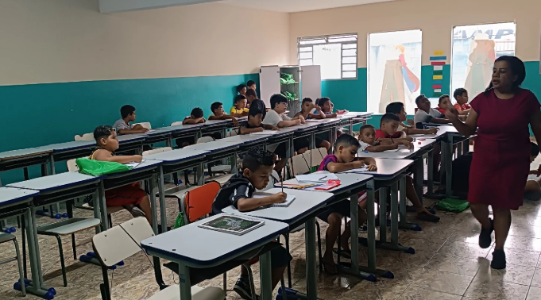
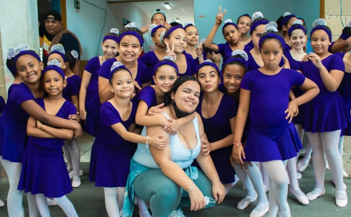
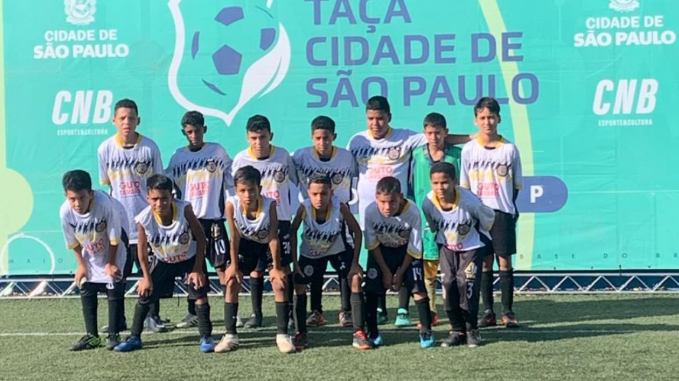
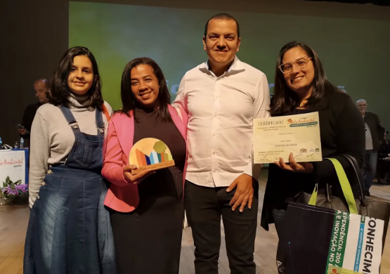

Projetos que Transformam Vidas
Cada projeto do Instituto Kaleo nasce com o propósito de cuidar, educar e inspirar crianças,
fortalecendo famílias e comunidades. Acreditamos que pequenas ações podem gerar grandes transformações.

🌱 Nossos Projetos
Educar para o Futuro

Oferece reforço escolar gratuito, oficinas de leitura e apoio psicológico para crianças em situação de vulnerabilidade.
Nosso objetivo é garantir que cada aluno descubra seu potencial e se prepare para um futuro cheio de oportunidades.
Brincar e Crescer

Espaço de convivência e lazer que promove o desenvolvimento por meio de brincadeiras educativas,
jogos cooperativos e atividades culturais. Aqui, cada risada é uma semente de esperança.
Esporte em Foco

Programa de acolhimento e apoio ao esporte, transformando a saúde e vida de nossas crianças.
🤝 Seja um Voluntário
Quer fazer parte dessa transformação?
O Instituto Kaleo conta com pessoas dedicadas que doam tempo, talento e amor ao próximo.
Inscreva-se na nossa página de cadastro e participe dos nossos projetos como voluntário!

💚 Apoie Nossos Projetos
Sua contribuição ajuda o Instituto Kaleo a continuar transformando vidas!
Com doações, conseguimos oferecer alimentação, materiais escolares, roupas e atividades educativas para centenas de crianças.
Clique abaixo e escolha a forma de apoio:
- Doação financeira: contribua via PIX:
doacoes@institutokaleo.org
- Doação de materiais: brinquedos, livros, roupas e alimentos não perecíveis.
- Parcerias: empresas podem adotar projetos ou oferecer serviços solidários.